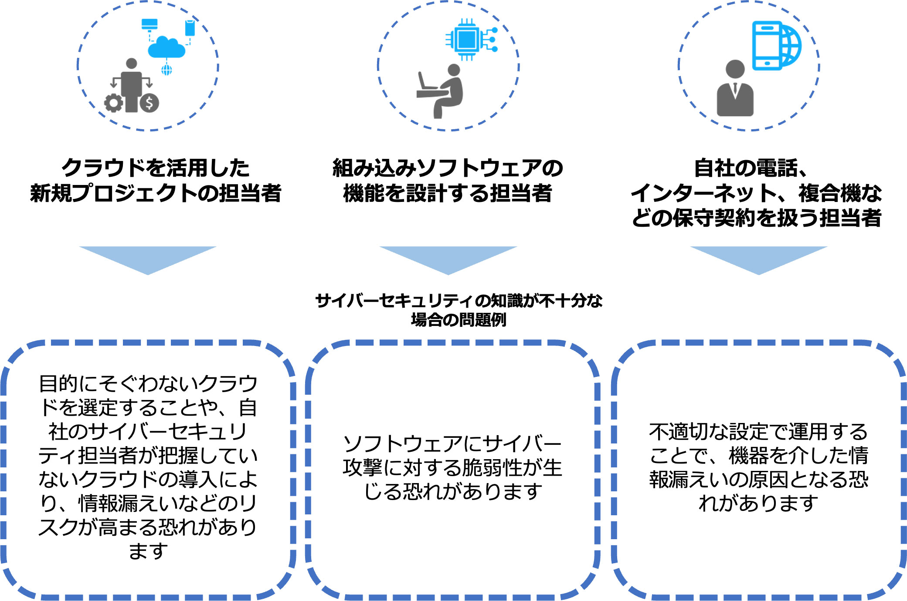

6-1-3. DX with Cybersecurity
業務や製品・サービスのデジタル化が進む中、サイバーセキュリティの確保は企業の価値に直結する重要な要素となっています。このため、デジタルトランスフォーメーションとサイバーセキュリティ確保に向けた取組みを同時に推進すること（DX with Cybersecurity）が不可欠になっています。しかしながら、中小企業がDX with Cybersecurityを推進するにあたり、人材や予算などのリソース不足などさまざまな課題が存在しています。これらの課題に対処するため、国が実施している施策の一部について説明します。
DX with Cybersecurityの推進に向けた主な施策の分類
経営層の意識改革
【課題】経営層が主体性をもってデジタルトランスフォーメーションとサイバーセキュリティ対策に取組むためには、専門家とのコミュニケーションが重要
【施策】経営者がITやセキュリティに関する専門知識を持っていない場合でも、セキュリティ専門家と協力し、「プラス・セキュリティ」知識を習得する環境を整備
地域・中小企業におけるDX with Cybersecurityの推進
【課題】中小企業は、セキュリティ対策に予算を割く事の必要性を理解する
【施策】中小企業が利用しやすい安価かつ効果的なセキュリティサービス・保険の普及など、中小企業向けセキュリティ施策を推進
新たな価値創出を支えるサプライチェーンなどの信頼性確保に向けた基盤づくり
サプライチェーンの信頼性確保
【課題】サイバー攻撃の起点となり得る箇所の拡大に伴う、リスク管理が重要
【施策】産業分野別、または産業横断的なガイドラインの策定や活用促進を通じて、産業界におけるセキュリティ対策の具体化・実装を促進
セキュリティ製品・サービスの信頼性確保
【課題】市場において提供されるセキュリティ製品・サービスが信頼できるか、客観的な評価が必要
【施策】一定の基準を満たすセキュリティサービスの審査・登録する仕組みを整備
先端技術・イノベーションの社会的実装
【課題】デジタル化の進展に伴い、効率的なセキュリティ対策が必要
【施策】研究機関の知識や技術を民間企業が活用しやすい環境の整備や、企業が社外の知識や技術を取り入れ、組織の改革（セキュリティ対策の強化など）を進められる環境の整備を推進
ここからは、デジタルトランスフォーメーションを推進するために必要なスキルや人材について説明します。デジタルトランスフォーメーションを進めていくには、社内にデジタルトランスフォーメーションの素養を持った人材が必要ですが、中小企業において重要なのは、デジタルトランスフォーメーションに関する高度な知識を持った人材を確保・育成することよりも、まずは経営層を含め社内の全ての人々がデジタルトランスフォーメーションに理解や関心を持ち、自らの業務を変革して新たな付加価値を生み出そうとするような意識を持つことです。そのために必要となるデジタルトランスフォーメーションに関するリテラシー（基礎的な知識やスキル、マインドセット）を説明していきます。
DXに関するリテラシーを身につけたことによる効果（個人）
世の中で起きているDXや最新の技術へのアンテナを広げ、日々生まれている新たな技術、キーワードなどにも興味を向けられるようになります。
知らない内容に接した際は、自ら調べてDXの知識を広げていけるようになります。
デジタルトランスフォーメーションに関するリテラシーを身につけた人材の例
DXに関するリテラシーを身につけたことによる効果（会社）
①経営層
社会やビジネス環境の変化において有益な技術・考え方を知ることで、自社のDXの方向性を思案し、社員に示すことができる
②DXを推進する人材との協働
事業内容に知見がある人材とDXを推進する人材（DXに関する専門性が高い人材）との協働が進み、企業としてのDXが進みやすくなる
③会社全体でDXへの取組み
社員全員がDXに関するリテラシーを身につけることで、DX推進に伴う組織内の変化に対する受容性が高くなる
図31. DXリテラシー標準に沿った学びによる効果の概要
（出典）IPA、経済産業省「デジタルスキル標準ver.1.0 」を基に作成
デジタルスキル標準（DSS）
経済産業省とIPAがまとめた「デジタルスキル標準（DSS）」では、すべてのビジネスパーソンがデジタルトランスフォーメーションに関する基礎的な知識、スキル、マインドセットを身につけるための学習指針を「DXリテラシー標準」として策定しています。企業は、社員に対して、デジタルトランスフォーメーションに関するリテラシーを身につけさせるための育成方法を検討する際に、指針として活用することができます。
DXリテラシー標準は、特定の産業や職種、部署などに依存しない汎用性を重視して作成されています。そのため、企業や組織がこれを適用する際には、自身が属する産業や事業の方向性に合わせる必要があります。
DXリテラシー標準は、以下のように構成されています。
図32.DXリテラシー標準の全体像
（出典）IPA、経済産業省「デジタルスキル標準ver.1.1 」を基に作成
デジタルスキル標準の改訂について
急速に普及する生成AIは、各企業におけるDXの進展を加速させると考えられ、企業の競争力を向上させる可能性があります。あわせて、ビジネスパーソンに求められるスキル・リテラシーも変化し、より重要になる部分もあると想定されます。その状況に対応するため、2023年８月にDXリテラシー標準に関する内容が改定されました。
追加された生成AIに関する内容を以下の図で説明します。
図33.DXリテラシー標準の改訂（ 2023年８月）の概要
（出典）IPA、経済産業省「デジタルスキル標準ver.1.1 」を基に作成
DXリテラシー標準の学習方法
「マナビDX」という、すべての社会人にとって必須であるデジタルスキルを学べるコンテンツを紹介しているポータルサイトがあります。このポータルサイトでは、DXリテラシー標準の各項目ごとに学習できる講座が掲載されており、DXリテラシーを学ぶことができます。
プラス・セキュリティ
プラス・セキュリティとは
自らの業務遂行にあたってセキュリティを意識し、必要かつ十分なセキュリティ対策を実現できる能力を身につけること、あるいは身につけている状態のこと[14]
企業は、デジタルトランスフォーメーションの推進と並行してサイバーセキュリティへの対策が求められています。この状況の中、経営層をはじめ、法務や広報といった、必ずしもITやセキュリティに関する専門知識や業務経験を有していない人も「プラス・セキュリティ」知識を習得することが重要です。なぜなら、デジタルトランスフォーメーションが進む中、サイバーセキュリティ担当部署だけでは、サイバーセキュリティ対策への対処が難しい状況になっているためです。そのため、サイバーセキュリティ対策が不十分な場合、インシデントが生じる可能性がある業務を担っている人材には、業務に必要なセキュリティに関する知識・スキルを身につけてもらう必要があります。
プラス・セキュリティ人材の育成
プラス・セキュリティ知識を身につける方法として、主に試験・資格を活用したり、教育プログラムを受けたりする方法があります。ここでは、具体例も含めて紹介します。
試験・資格の活用
各分野の人材がプラス・セキュリティ知識を身につける方法の1つとして、試験や資格の活用が挙げられます。資格を活用することの利点は、特定の役割や業務を担うために必要なスキルを効率よく習得できることです。
［例］
情報セキュリティマネジメント試験
【対象】企業の戦略マネジメント層や実務者層のサイバーセキュリティ担当者
【内容】本試験は、情報セキュリティマネジメントの計画・運用・評価・改善を通して組織の情報セキュリティ確保に貢献し、脅威から継続的に組織を守るための基本的なスキルを認定するものです。
教育プログラム・コミュニティ活動の活用
NISC（内閣サイバーセキュリティセンター）では、経営層、管理職、一般社員ごとにそれぞれ初級、中級、上級で難易度が分けられたプラス・セキュリティ知識を補充できる研修、セミナー、講義などが紹介されています。
［例］
戦略マネジメント系セミナー（IPA）
【対象】管理職、一般社員（特に、「セキュリティ統括責任者」である部課長級の責任者層、今後責任者層になることが期待される実務者層・技術者層、「プラス・セキュリティ」人材の方に向いています）
【難易度】中級
【内容】セキュリティ統括責任者として認識しておくべき事項を、「有識者講演」、「プログラム講義」、「ディスカッション（グループワーク）」の３つのプログラムで学習するセミナーです。
座学だけでなく、受講者間でのディスカッション・意見交換の場を設け、より実践的で深い理解が得られるアクティブラーニングの機会を提供しています。
実践サイバー演習「RPCI」（NICT）
【対象】経営層、管理職、一般社員（特に、CISO、CSIRT管理者、CSIRTメンバー、インシデントが発生した際の対応に携わる方、情報システムの管理・運用・調達・企画・開発に携わる方に向いています）
【難易度】中級～上級
【内容】本番に近いリアルな環境でのインシデント対応を行う演習です。擬似的に発生させたサイバー攻撃にCSIRTとしてチームで対処します。実際の対応に近い体験をすることで、多くの気づきや学びを得ることができます。
詳細理解のため参考となる文献（参考文献）
[14]:経済産業省.”サイバーセキュリティ経営ガイドラインVer2.0付録Fサイバーセキュリティ体制構築・人材確保の手引き～ ユーザー企業におけるサイバーセキュリティ対策のための組織づくりと従事する人材の育成～第1.1版”. https://www.meti.go.jp/policy/netsecurity/downloadfiles/tekibihontai1.1r.pdf, （2023-07-28）.